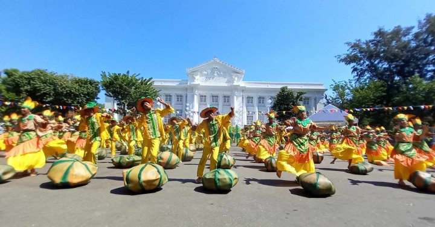
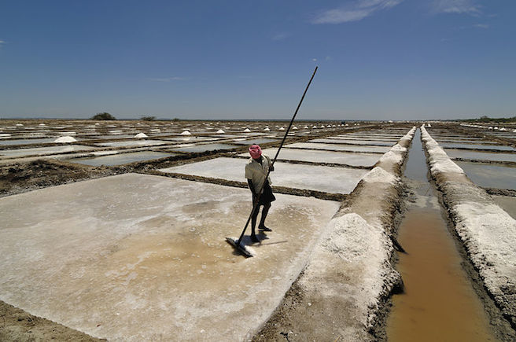

Pangasinan’s culture and festivals reflect the province’s deep connection to the sea, agriculture, faith, language, and tradition. Celebrations throughout the year highlight the hardworking spirit of its people — from fishermen and salt makers to farmers and artisans. Music, dance, rituals, and community gatherings play an important role in preserving identity and strengthening unity. Through these festivals and traditions, Pangasinan continues to honor its history while proudly showcasing its vibrant cultural life.
Pangasinan Culture & Festivals:
Bangus Festival
Quick Facts
- Location: Dagupan City, Pangasinan, Philippines
- Main highlight: Street dancing and bangus grilling events
- First held: 2002
- Usual dates: April (around Dagupan’s city fiesta)
- Signature event: Bangusan Street Party and Grill
An annual celebration honoring Dagupan as the “Milkfish Capital of the Philippines,” featuring street parties, cooking events, and cultural performances. The festival began in the early 2000s to promote the city’s thriving bangus (milkfish) industry and boost tourism. Bangus farming is a major livelihood in Pangasinan, and the festival showcases local pride, unity, and economic strength.
View MorePista'y Dayat

Quick Facts
- Location: Lingayen, Pangasinan, Philippines
- First celebrated: 1960s (formally organized in 1968)
- Main highlights: Fluvial parade, street dancing, beauty pageant, sports, and art events
- Duration: Multi-week celebration from early April to early May
A coastal festival celebrating the sea, culture, and heritage of Lingayen and the Lingayen Gulf. The festival was created to highlight the province’s maritime resources and tourism potential. It reflects Pangasinan’s deep connection to the sea, fishing traditions, and coastal communities.
View MoreMalinac Lay Labi
Quick Facts
- Genre: Folk love song
- Origin: Pangasinan, Philippines
- Theme: Nostalgia, longing, and affection
- Notable use: Cultural and educational performances in Pangasinan and beyond
Malinac Lay Labi is the most iconic folk song of Pangasinan, often regarded as the province’s unofficial anthem. Its gentle melody and poetic lyrics reflect the calm beauty of Pangasinan’s nights, the simplicity of provincial life, and romantic emotions. It is a cultural touchstone connecting generations and communities across the province.
The song originated in Pangasinan decades ago as a romantic folk tune sung in the native language. While its exact originator is unknown, it became widely known through local gatherings, fiestas, and school programs. Over time, it evolved from a simple love song to a symbol of provincial identity, performed in festivals, competitions, and cultural events throughout Pangasinan.
“Malinac Lay Labi” preserves the Pangasinan language while showcasing the province’s musical heritage. It is performed during town fiestas, cultural programs, and educational events. Beyond entertainment, it evokes nostalgia and pride among Pangasinenses, particularly for those living far from home.
Abel Pangasinan
Quick Facts
- Origin: Pangasinan, Philippines
- Medium: Handwoven cotton or abaca fibers
- Technique: Backstrap or pedal loom weaving
- Common products: Blankets, table runners, garments
Abel Pangasinan refers to traditional handwoven textiles made in the province, often using cotton or natural fibers. The textiles are known for intricate geometric patterns, bright colors, and durable fabric, which are used for clothing, blankets, and ceremonial items.
Weaving in Pangasinan has existed for centuries, initially as a domestic craft for clothing and household use. The patterns and techniques were passed down through generations, blending pre-colonial weaving methods with Spanish-era designs. Abel Pangasinan became recognized as a symbol of regional craftsmanship.
Abel weaving represents the artistry, patience, and cultural identity of Pangasinenses. It is closely tied to community life, with families often teaching the craft to children, and showcasing textiles during festivals, rituals, and trade fairs.
Salt Harvest Rituals

Quick Facts
- Location: Bolinao and Dasol, Pangasinan, Philippines
- Season: Dry season (typically January–May)
- Core practice: Traditional salt harvesting and thanksgiving rituals
- Cultural role: Expression of coastal identity and intergenerational craftsmanship
Salt Harvest Rituals in Pangasinan are traditional practices tied to the province’s centuries-old salt-making industry. Coastal communities in Bolinao, Dasol, and nearby towns gather each season to extract sea salt through age-old methods, celebrating both the harvest and their connection to the sea.
Salt production in Pangasinan dates back to pre-colonial times. Early communities built evaporation beds along the coast, letting seawater naturally crystallize under the sun. Over time, these salt-making practices evolved into seasonal rituals marking the harvest. The ritual combines labor and tradition: salt farmers often offer prayers or small offerings to the sea, asking for protection and abundance before collecting the first crystals of the season.
Salt Harvest Rituals symbolize the hard work, resilience, and communal spirit of Pangasinan’s coastal communities. They are not only an economic activity but a cultural event that connects generations. Festivals in Bolinao and Dasol sometimes highlight the harvest, blending work with celebration, music, and dance.